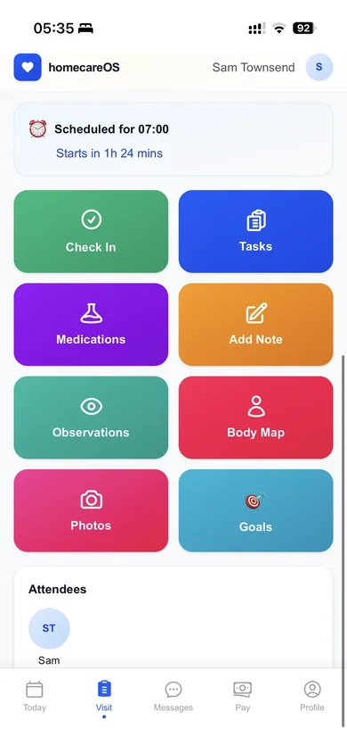
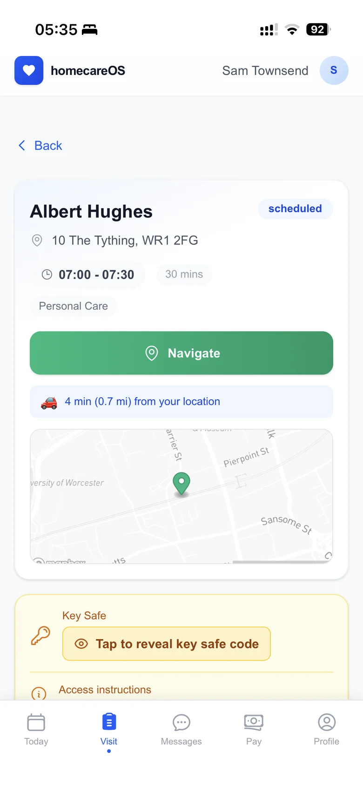
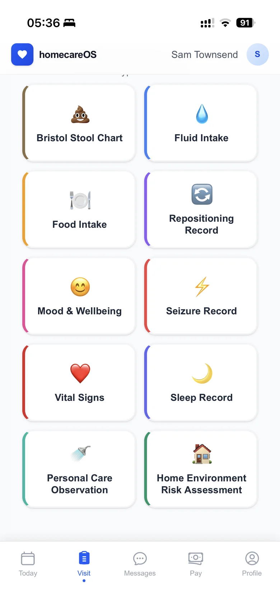
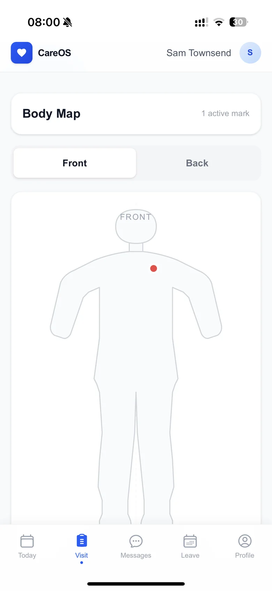
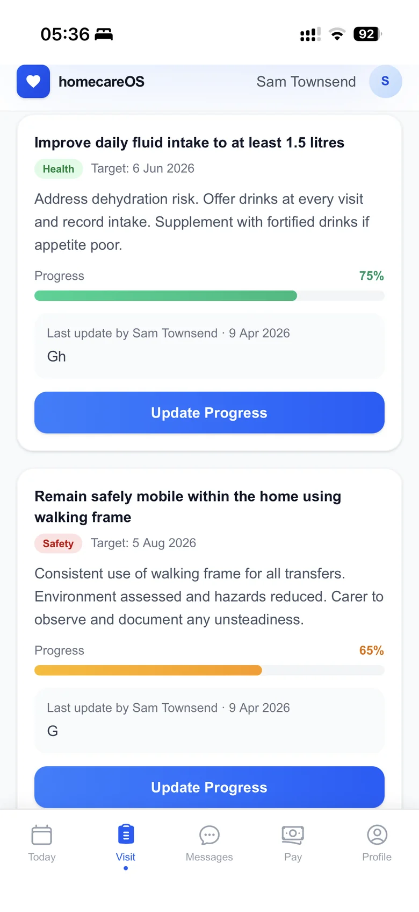
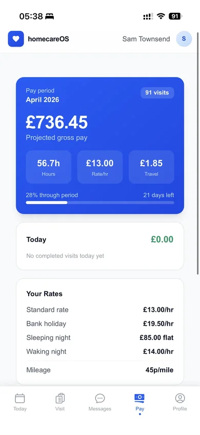
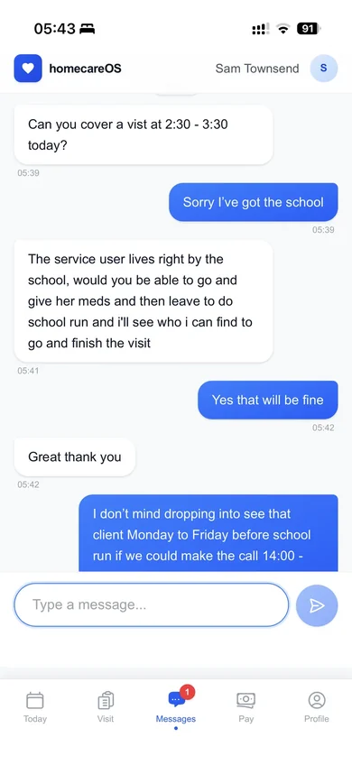
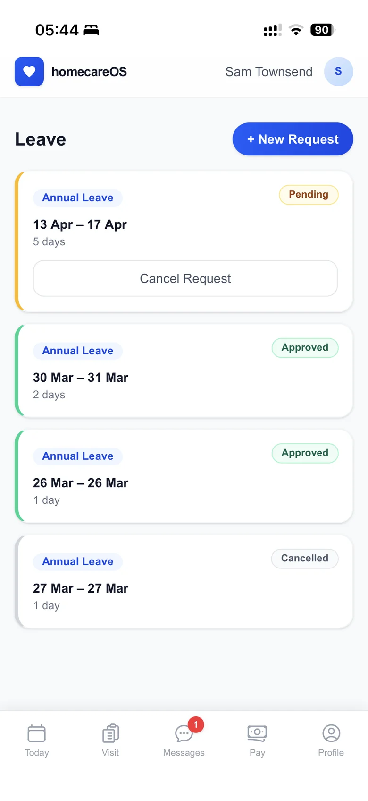

The carer mobile app that works offline
A purpose-built, mobile-first app for UK home care that works offline, giving your care team everything they need at the point of care, even in areas with no signal.
Built for Carers, Not Against Them
Most care software treats the mobile app as an afterthought, a stripped-down version of the desktop built to tick a box. homecareOS was different from day one. We built the carer mobile experience as a core part of the platform, designed around how carers actually work in the field: one-handed, between visits, often with patchy signal. The result is an app your carers will genuinely want to use.

Download the homecareOS Carer app
Free for every carer on every plan. Visit check in and out, eMAR, body maps, observations, holiday requests and offline mode, built for one-handed use between visits.
Everything a Carer Needs, Right in Their Pocket
Tap a tab to explore each feature, designed for one-handed use between visits.







Why Carers Love Our App
Offline-First Design
Full functionality in areas with poor signal. Data syncs automatically when connection returns.
GPS Check-In/Out
One tap to confirm arrival and departure. GPS verification gives the office confidence without micromanaging.
Digital Care Notes
Quick-entry templates for common notes. Voice-to-text for detailed observations. No more paper forms.
eMAR on Mobile
Medication administration records at the point of care. Prompts, alerts, and refusal tracking built in.
Body Map Recording
Visual body maps for documenting skin integrity, bruises, or pressure areas with photo evidence.
Clear Daily Schedule
Carers see their full day at a glance: visits, travel time, breaks, and service user details.
Everything a Carer Needs, Nothing They Don't
Today's visit schedule with service user details
Complete and sign assigned forms, checklists and document confirmations
One-tap GPS check-in and check-out
Pre-populated task checklists per visit
Digital care note entry with templates
Voice-to-text note recording
Medication administration (eMAR)
Body map documentation with photos
Observation and wellbeing recording
Leave and holiday requests from the app
Mileage tracking and claims
Push notification alerts
Pay transparency and schedule visibility
The Impact on Carer Experience
Recording care at the point of care, not later back at the office, improves accuracy and saves documentation time, including in a UK NIHR evaluation of home-care agencies.
See the evidence →Carer Mobile App: Frequently Asked Questions
Offline, eMAR, check in and out, and getting the app on carer phones.
Employee perks, built into the app
We are building carer perks and benefits directly into the app, so looking after your team is one less thing to organise. Everyday savings, wellbeing support and financial tools like earned wage access, all in the app your carers already open every day.
Give Your Carers the Tools They Deserve
See how the homecareOS mobile app transforms the daily experience for your care team. Book a demo or explore our pricing.
Compare homecareOS to your current software
See how we stack up against every major UK home care platform, feature-by-feature, transparent pricing, no fluff.